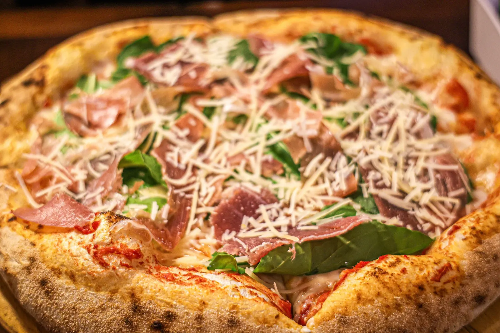

01 / 03
captação
foto e vídeo com direção, luz e ângulo pensados pra sua marca. não pra galeria do celular.
REC4K · 30fps





a força que impulsiona marcas a se destacarem
esse post foi feito pela brio.
esse site também.
pode ter a melhor câmera do mundo:
mas sem olhar e edição, é só um arquivo pesado.
edição ao vivo
desliza e me diz: é o mesmo prato? 👀
foto e vídeo com direção, luz e ângulo pensados pra sua marca. não pra galeria do celular.
cor, corte e ritmo. é aqui que o arquivo pesado vira conteúdo que segura o dedo no feed.
 antesdepois
antesdepois
feed com intenção: identidade, calendário e conteúdo que conversa com quem compra de você.

portfólio
cada marca tem a sua própria história. clica pra entrar.